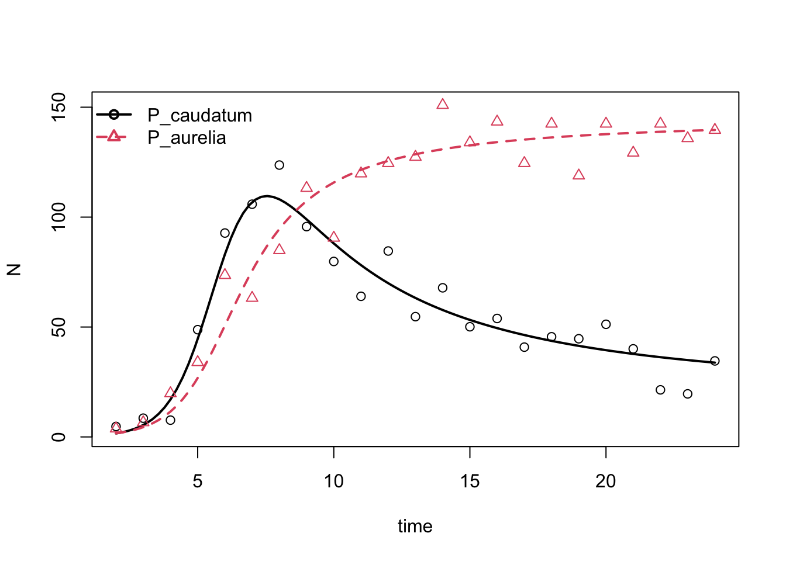

I indicated that even a linear regression is actually proposing a model - that a response variable y is driven by a driving variable x, and that this relationship is linear. For example, I might hypothesize that newborn baby weight (kg) is driven by the length of gestation (weeks). As a researcher, I collect data to test this hypothesize and see how well a linear model does describe the relationship, and I estimate the parameters in the linear model.
The data looks like this:
| gestation | weight |
|---|---|
| 30 | 1.6 |
| 32 | 1.7 |
| 34 | 2.5 |
| 36 | 2.8 |
| 38 | 3.2 |
| 40 | 3.5 |
The linear model looks like this:
\[y = m(x) + b\] \[ weight = m(gestation period) + b \] This model has variables y and x, and parameters m (the slope) and b (the y-intercept). Our goal is to fit the data to the model, and estimate the model parameters m and b that are most consistent with the data. You will learn how to do this in an Introduction to Statistics with R class - here I am using it to show you how to fit data to a model in the most basic case. This knowledge will come in handy later when we have more complex data and models. Please open a new R script and complete the following exercises (in some instances I provide the full code and you just need to type it into your R script. In other instances you will generate the code during class). Save your code periodically!
To enter the data into R, just paste this code in:
baby <- matrix(data = cbind(c(30, 32, 34, 36, 38, 40), c(1.6,
1.7, 2.5, 2.8, 3.2, 3.5)), nrow = 6, ncol = 2, dimnames = list(NULL,
c("gestation", "weight")))
baby <- as.data.frame(baby)Please create a scatterplot with gestation period on the x-axis and weight on the y-axis. Add in informative x and y-axis labels. Mine is below.
Paste the code I provide here, to fit the data to the linear model and estimate the values for \(b\) (the y-intercept) and \(m\) (the slope of the linear relationship).
# Fit linear model
model = lm(weight ~ gestation, data = baby)
# Examine model
summary(model)Based on this, what are the most likely estimates for the slope and y-intercept?
And what is the value of the residual sum of squares (RSS, sum of squared deviations from observed to model-predicted data)?
deviance(model)## [1] 0.09371429We can place the model-estimated line onto the scatterplot of the
observed data to see the model-predicted values of weight for each
gestation age according to our model. We use the command
abline(model):
plot(baby, main = "Estimated baby weights during pregnancy",
xlab = "Gestation period (weeks)", ylab = "Weight (kg)")
abline(model)To make sure this is clear, let’s look at the sum of squared
residuals for some data that is poor fit to a linear model. Enter the
following data into R, and run a linear regression using the
lm command, then calculate the residual sum of squares
(RSS):
| gestation | weight |
|---|---|
| 30 | 1.4 |
| 32 | 2.4 |
| 34 | 2.4 |
| 36 | 4.7 |
| 38 | 3.8 |
| 40 | 3.2 |
I got a value of sum of squared residuals equal to 3.4161905, indicating that the best-fit line (obtained by minimizing the RSS) is not as good a fit to this data as the dataset above.
I hope it makes sense now how we fit data to our hypothesized model and estimate the parameters of the model most likely to have produced our observed data.
We can use the same perspective - fitting data to a model by minimizing the RSS - to study non-linear models. This presentation is very straight-forward, but I will be transparent that non-linear least squares isn’t always easy (I chose data that was relatively easy to fit). You would take more coursework to really be ready to apply this to more nonlinear models (thought it certainly is done, usually for single-species growth or feeding curves).
Here, we will look at how organisms absorb and utilize nutrients - a nutrient-response curve (perhaps useful for studying phtyoplankton nutrient uptake). In this instance, we still have a response variable y and a causal variable x, but the relationship between x and y is nonlinear. It has been observed that many nutrient-response curves reach an asymptote, where organisms become saturated, and no longer increase their absorption no matter how many more nutrients are available. The shape of one kind of useful saturation curve is described by a Michaelis-Menten model.
The general form of this is:
\[ Y = \frac{aX}{b + X} \]
In our phytoplankon example, let’s say that Y is the cell length (in \(\mu m\)) and X is the phosphorus concentration (in \(\mu g / l\)). The model parameters are a, the upper asymptote (for \[ X \to \infty \]), and b, the the X value giving a response equal to a/2.
The data looks like this:
| Y | X |
|---|---|
| 12.73644 | 3 |
| 13.66411 | 5 |
| 14.10844 | 7 |
| 14.43210 | 22 |
| 14.77975 | 28 |
| 14.86073 | 39 |
| 14.78124 | 46 |
| 14.90793 | 200 |
Non-linear least squares is included in base R and can be fit to data
using the nls command. Use ?nls to check the
syntax needed to get this command to work: You’ll need to specify the
model formula, the data, and often starting values - these are beginning
options for estimates for the nls estimator. nls has a difficult job,
which is guessing the combination of parameters that are the best fit
for the data - give it a hand by making reasonable suggestions for
beginning values of model parameters that need to ne estimated.
Note that r is also pre-supplied with some model formulas,
including a Michaelis-Menten curve, that pre-chooses starting values for
you. If you’re lucky eough to be fitting a model already included in R’s
formulas, the job will be easier. You can find the self-starting models
included with R by checking ?selfStart, these include:
SSasymp, SSasympOff, SSasympOrig, SSbiexp, SSfol, SSfpl, SSgompertz, SSlogis, SSmicmen, SSweibull.
To fit the data to the Michaelis-Menten model using the self-start
formula SSmicmen:
model.nls <- nls(Y ~ SSmicmen(X, a, b))
summary(model.nls)Question: What are the most likely estimates for the parameters in the model, \(a\) and \(b\)
Let’s plot the data and fitted curve:
newX <- as.data.frame(seq(0, 200, by = 0.1))
colnames(newX) <- "X"
pred <- predict(model.nls, newX)
plot(X, Y, main = "Michaelis-Menten nutrient uptake", xlab = "cell length (micrometers)",
ylab = "P (micrograms / liter)")
lines(newX$X, pred, lwd = 3, col = "blue")I set up an experiment in 2020, where I placed Daphnia pulex and Daphnia magna in a 300-liter container, added water, nutrients, and phytoplankton. I let the Daphnia grow for 8 weeks, then fit the data to a Lotka-Volterra competition model, to estimate growth rates and interaction coefficients. I used nls for this, so let’s take a look at the data and the fit of that curve.
For this, I will use a modified, discrete-time version of the Lotka-Volterra competition equation:
\[\begin{aligned} n_{1,t+1} &= n_{1,t} + n_{1,t}(L_1 e^{(-A_1 n_{1,t} - B_1 n_{2,t})}) \\ n_{2,t+1} &= n_{2,t} + n_{2,t}(L_2 e^{(-A_2 n_{2,t} - B_2 n_{1,t})}) \end{aligned}\]
Here, the model parameters are:
\(L_1\) and \(L_2\) - the population growth rate
\(A_1\) and \(A_2\) - the rate of intraspecific competition (competition with individuals of the same species)
\(B_1\) and \(B_2\) - the rate of interspecific competition (competition with individuals of the other species)
Please make a scatterplot of the data for the 2 species, with time (week) on the x-axis and points for the two species on the y-axis
I include my code here in case you just want to use mine:
dp <- matrix(data = cbind(1:8, c(44, 1082, 5681, 6036, 3310,
2900, 1504, 340), c(44, 401, 6684, 10652, 6308, 5198, 3872,
2417)), nrow = 8, ncol = 3, dimnames = list(NULL, c("week",
"dp", "dm")))
dp <- as.data.frame(dp)
knitr::kable(dp, format = "markdown", padding = -1L, align = "c")| week | dp | dm |
|---|---|---|
| 1 | 44 | 44 |
| 2 | 1082 | 401 |
| 3 | 5681 | 6684 |
| 4 | 6036 | 10652 |
| 5 | 3310 | 6308 |
| 6 | 2900 | 5198 |
| 7 | 1504 | 3872 |
| 8 | 340 | 2417 |
plot(dp$week, dp$dm, pch = 19, col = "orange", main = "Daphnia population size",
xlab = "week", ylab = "N")
points(dp$week, dp$dp, pch = 19, col = "black")
legend("topright", legend = c("D. magna", "D. pulex"), pch = 19,
col = c("orange", "black"))Here is code to get the nls model to fit, and estimate parameters in the Lotka-Volterra competition equation.
sub <- read.csv("https://raw.githubusercontent.com/jhpantel/ude-ecomod/main/data/sub.csv",
header = T)
dp_mod <- nls(dp_Nt1 ~ dp_Nt + dp_Nt * ((L * exp(-A * dp_Nt -
B * dm_Nt))^days), data = sub, start = c(L = 1.5, A = 1e-04,
B = 1e-04), na.action = na.omit)The code seen here estimates the value of \(L_1\), \(A_1\), and \(B_1\) - all parameters for the D. pulex
growth equation. What are the model-estimated values for those
parameters, given the data? Hint: use
summary(dp_mod)
sub$yhat <- predict(dp_mod)
plot(sub$week[sub$meso == 30], sub$dp_Nt1[sub$meso == 30], main = "mesocosm 30 D. pulex",
xlab = "week", ylab = "N", pch = 19, col = "orange")
lines(sub$week[sub$meso == 30], sub$yhat[sub$meso == 30], col = "blue")Finally, please edit the code to fit the model for the D. magna data. Give the most likely parameter estimates, and a plot of the data and model-fit line.
We will use data from Gause’s experiments with Paramecium, tracking competitive interactions between P. aurelia and P. caudatum.
# load competition data
data("gause_1934_science_f02_03")
# subset out data from species grown in mixture
mixturedat <- gause_1934_science_f02_03[gause_1934_science_f02_03$Treatment ==
"Mixture", ]
# extract time and species data
time <- mixturedat$Day
species <- data.frame(mixturedat$Volume_Species1, mixturedat$Volume_Species2)
colnames(species) <- c("P_caudatum", "P_aurelia")
# run wrapper
gause_out <- gauseR::gause_wrapper(time = time, species = species)
What were the parameter estimates?
gause_out$parameter_intervals## lower_sd mu upper_sd
## P_caudatum0 0.01033120 1.595268713 2.463299e+02
## P_aurelia0 0.08812049 1.631618399 3.021066e+01
## r1 0.34795148 1.259232133 4.557146e+00
## r2 0.47571115 1.026156214 2.213521e+00
## a11 -0.02061163 -0.005157869 -1.290709e-03
## a12 -0.02361279 -0.008000167 -2.710508e-03
## a21 -0.01100428 -0.001974871 -3.544183e-04
## a22 -0.01459709 -0.006851130 -3.215572e-03